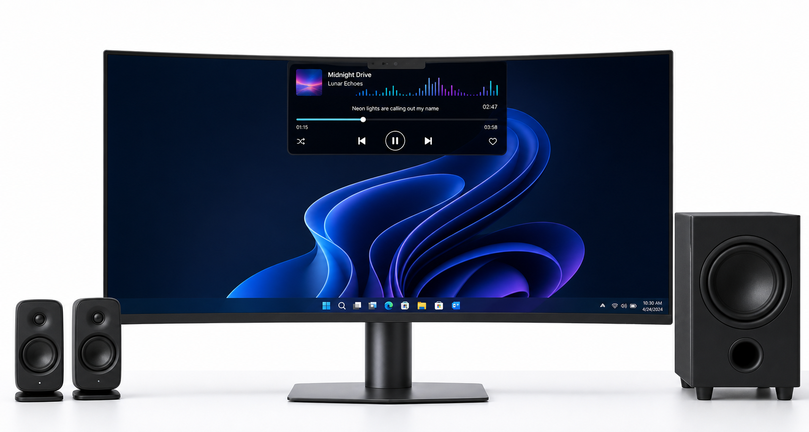

Tu reproducción, en tiempo real
Título, artista, portada, progreso y estado de reproducción desde Spotify y otros reproductores compatibles con Windows.
W
Nombre de la canciónArtista
Windows Notch convierte la parte superior de tu monitor en un centro multimedia elegante con música, letras sincronizadas, controles y personalización profunda.

Windows Notch en un escritorio ultrawide con audio 2.1
Diseñado para acompañarte sin robarte espacio ni atención.
Título, artista, portada, progreso y estado de reproducción desde Spotify y otros reproductores compatibles con Windows.
Letras sincronizadas con desplazamiento automático, vista karaoke y teleprompter compacto.
Reproduce, pausa, cambia de canción, activa aleatorio y guarda tus favoritas.
Elige entre distintos formatos de reloj y fecha para integrarlos naturalmente en tu escritorio.
Barras, ondas, puntos y pulsos con animaciones que cobran vida mientras suena tu música.
Una cápsula de cristal flotante que se expande para mostrar letras, controles y progreso.
Ajusta cada detalle y observa los cambios antes de iniciar el widget.
Windows Notch utiliza las sesiones multimedia del sistema para detectar lo que escuchas. La conexión opcional con Spotify añade favoritos, aleatorio y un control más completo.
Durante su etapa de desarrollo y pruebas será gratuito. Si en el futuro existe una versión premium, las funciones básicas seguirán siendo accesibles.
No para mostrar la canción ni usar los controles multimedia de Windows. Algunas acciones avanzadas de la API de Spotify pueden depender del tipo de cuenta y de sus políticas.
Sí. La información principal se obtiene desde la sesión multimedia activa de Windows, por lo que puede funcionar con navegadores y otros reproductores compatibles.
Las letras dependen de servicios externos y de que exista una coincidencia correcta de título y artista. Algunas canciones aún no están disponibles.
Windows Notch se encuentra en desarrollo activo. La descarga pública estará disponible cuando la primera versión sea estable.
Versión 0.1.0 · Windows 10/11 · Creado por JEHUDEV